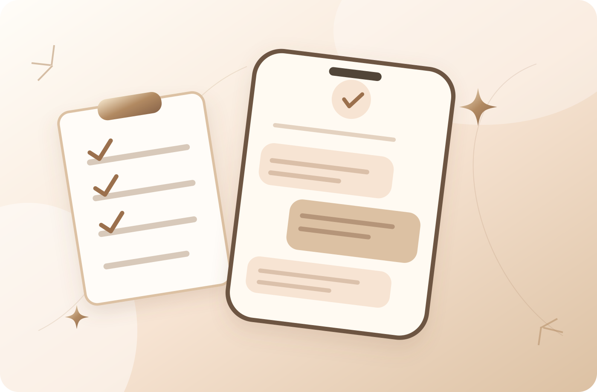

Поддержка специалистов01 / Экспертное сопровождение
Чат заботы с экспертами
Для тех, кто хочет доверить вопросы своего здоровья профессионалам. Ответы врачей превентивной медицины и нутрициологов, обсуждение анализов и экспертное сопровождение.
- Ответы врачей и нутрициологов в рамках формата сообщества
- Разбор вопросов по анализам и рекомендациям
- Помощь с пониманием питания и дальнейших шагов
Доступ по личному приглашению